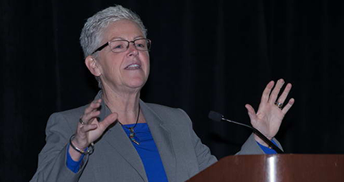

Presentations

Please take a moment to fill out a short, 5-minute evaluation of the Global Methane Forum. Your feedback will help determine how GMI plans its future meetings.
Speaker presentations are provided in portable document format (PDF) below, organized by plenary sessions and sectors. Please note that GMI is not authorized to provide some of the presentations.
Tuesday, 29 March
Global Methane Mitigation Post-COP21
Opening Remarks (PDF, 248k)
Janet McCabe, Acting Assistant Administrator, US EPA (USA)
Outcomes of Conference of Parties 21 (COP21): Implications for Future Methane Work (No prepared slides)
Karen Florini, Deputy Special Envoy – Climate Change, U.S. Department of State (USA)
What Science Tells Us: Why Methane is Important (PDF, 4MB)
Johan Kuylenstierna, Policy Director, Stockholm Environment Institute, University of York, CCAC Science Advisory Panel (UK) and Drew Shindell, Duke University, CCAC Science Advisory Panel (USA)
Finance Roundtable: Overcoming Challenges to Methane Mitigation
Moderator: Dianne Rudo, Rudo International
Innovative Approaches to Methane Finance: the Pilot Auction Facility for Methane and Climate Mitigation (PDF, 1.1MB)
Scott Cantor, Carbon Finance Specialist, World Bank (USA)
Overcoming Challenges to Methane Mitigation: ADB's Experience in Asia and the Pacific (PDF, 2.4MB)
Samuel Tumiwa, Deputy Regional Director, Asian Development Bank (USA)
Private Sector Development: What is the Role for Private Sector Financing?
Bob Ichord, Ichord Ventures, LLC (USA)
A Role for Public-Private Partnership in Financing (PDF, 1.3 MB)
Steven Wan, Fortman (Beijing) Clean Technology Co., Ltd. (China)
Converting INDCs Into Investment Strategies (PDF, 700k)
Laurence Blandford, Director of International Policy Analysis, Center for Clean Air Policy (USA)
Wednesday, 30 March
Policy Roundtable: Different Approaches to Methane Policies
Moderator: Jane Nishida, Principal Deputy Assistant Administrator, Office of International and Tribal Affairs, US EPA (USA)
Addressing methane emissions from Canada’s oil and gas sector (PDF, 456k)
Mike Beale, Assistant Deputy Minister, Environmental Stewardship Branch, Environment and Climate Change Canada
Colombia
Eduardo Sanchez, Climate Change Advisor, Ministry of Mines and Energy
Mexico
Maria Amparo Martínez, Institute of Ecology and Climate Change
Philippines
Emmanuel de Guzman, Secretary of Climate Change, Climate Change Commission
United States (No prepared slides)
Rick Duke, Deputy Director for Climate Policy, White House Office of Energy and Climate Change
Methane Challenge Launch Ceremony
Welcome Remarks (PDF, 222k)
Janet McCabe, Acting Assistant Administrator, Office of Air and Radiation, US EPA (USA)
Keynote Address: Gina McCarthy, Administrator, US EPA

GMI Re-Charter and New Strategic Partnership to Address Methane Globally
Introductions (No prepared slides)
Paul Gunning, Director, Climate Change Division, US EPA (USA)
Overview: More than a Decade of Successful Collaboration through GMI (No prepared slides)
Joe Goffman, Associate Administrator and Senior Counsel, Office of Air and Radiation, US EPA (USA)
Strategic Alliances between GMI and CCAC (No prepared slides)
Rita Cerutti, Director, Multilateral Affairs, Environment and Climate Change Canada and Co-chair, Climate and Clean Air Coalition Working Group (Canada)
Strategic Alliances between UNECE and GMI (PDF, 61k)
Christian Friis Bach, United Nations Under-Secretary-General, Executive Secretary of UNECE
Tuesday, 29 March - Biogas Sessions
China’s Food Waste and Sludge Management Practices, Challenges, and Lessons Learned
Keynote Speech: Municipal Organic Waste - Methane and Resource Recovery in China (PDF, 1.9MB)
Mr. Zhang Yue, Director General, Ministry of Housing and Urban-Rural Development (China)
World Bank’s Case in China (PDF, 1.1MB)
Sing (Terry) Cho, Senior Water & Sanitation Specialist, World Bank (China)
Sludge-to-Energy Case Study in China
Lijin Zhong, China Water Lead, World Resources Institute (China)
Current Status on Food Waste Treatment in China (PDF, 1.3MB)
Li Yong, International Marketing Manager, Bioland Group (China)
Panel Discussion
Facilitator: Lijin Zhong, China Water Lead, World Resources Institute (China)
Panelists:
- Zhang Yue, Director General, Urban Water Management Office and Urban Construction Department, MoHURD
- Sing (Terry) Cho, World Bank
- Vijay Jagannathan, Senior Fellow, World Resources Institute
- Li Yong, International Marketing Manager, Bioland Group(China)
Agriculture Panel Organized by CCAC
Introduction and Livestock and Short Lived Climate Pollutants (PDF, 2.7MB)
Theun Villinga, Wageningen University (Netherlands) and Pierre Gerber, Food and Agriculture Organization, seconded at the World Bank (USA)
Mitigation of Enteric Fermentation in Specialized Ruminant Production Systems
Alex Hristov, Pennsylvania State University (USA)
The Experience of Central America: How to mitigate emissions from enteric fermentation and manure in policy and practice? Muhammed Ibrahim, Tropical Agricultural and Research and Higher Education Center (CATIE) (Costa Rica) and Mario Cobos, Colegio de Posgraduados, Mexico (Mexico)
Opportunity for Practice Change Vietnam: Improved Manure Management Through Increased Utilization of Manure and Bioslurry (PDF, 4.6MB)
Steven von Eije, SNV Netherlands Development Organization (Vietnam)
Development of Draft National Integrated Livestock Manure Management (ILMM) Policy of Bangladesh (PDF, 484k)
Khan Shahidul Huque, Chief Scientific Officer, Bangladesh Livestock Research Institute (Bangladesh)
Panel Discussion: Potential of Livestock Production Improvement to Contribute to SLCP Reduction and Co-benefits
Panelists:
- Mario Cobos, Colegio de Posgraduados, Mexico (Mexico)
- Pierre Gerber, Food and Agriculture Organization, seconded at the World Bank (USA)
- Alex Hristov, Pennsylvania State University (USA)
- Kahn Shahidul Huque, Bangladesh Livestock Research Institute (Bangladesh)
- Muhammed Ibrahim, Tropical Agricultural and Research and Higher Education Center (CATIE) (Costa Rica)
- Steven von Eije, SNV Netherlands Development Organisation (Vietnam)
- Chris Voell, AgSTAR Program Lead, US EPA (USA)
Country Updates
- Argentina (PDF, 6.7MB)
- Dominican Republic (PDF, 1.0MB)
- Finland (PDF, 214k)
- Turkey (PDF, 1.4MB)
- Ukraine (PDF, 585k)
Wednesday, 30 March - Biogas Sessions
CCAC-C40 Cities Climate Leadership Group
Moderator: Ricardo Cepeda-Márquez, C40 Cities Climate Leadership Group (Mexico)
Rio’s Sustainable Agenda for the Waste Management: The Search for Environmental and Economic Sustainability with Social Responsibility (PDF, 24.2MB)
José Henrique Penido Monteiro, Rio de Janeiro City Solid Waste Company (COMLURB)(Brazil)
Power Generation from Biogas Utilization at Landfill Sites: Norte III - Final Disposal Environmental Complex, Metropolitan Area of Buenos Aires, Argentina (PDF, 5.3MB)
Marcelo Rosso, Argentina Ecological Coordination Society of State Metropolitan Area (CEAMSE) (Argentina)
Biogas Policies and Tools
INDCs as Drivers of Project Implementation (PDF, 462k)
Laurence Blandford, Director of International Policy Analysis, CCAP (USA)
Biogas Wastewater Assessment Technology Tool (BioWATT) (PDF, 808k)
Charlie Goff, Eastern Research Group, Inc. (USA)
Compost and Digestate Application in Europe – Quality Assurance & Standards (PDF, 1.3MB)
Grigor Stoyanov, 100-First Zero Waste & Organic Cycle Organisation (Bulgaria)
Organics Recycling – How Policy Supports Organics Recovery Markets (PDF, 3.9MB)
Josh Kelly, Materials Management Section Chief, Agency of Natural Resources, State of Vermont (USA)
OrganEcs - A Cost Estimating Tool for Managing Source-Separated Organics (PDF, 881k)
Andrea Stowell, Independent Contractor (USA)
Biogas Case Studies
Moderator: Elias Freig-Delgado, Green Growth Group (Mexico)
How Philadelphia Water Moved From Flaring Their Methane to a CoGeneration Plant with 5.6 MW of Power Generation (PDF, 1.2MB)
Metin Duran, Villanova University and Paul Kohl, Philadelphia Water (USA)
The Power of Waste: Biogas for Transportation in the U.S. (PDF, 2.2MB)
Matthew Tomich, President, Energy Vision (USA)
Carbon Finance Support Facility: Methane Gas Recovery and Combustion with Renewable Energy Generation from Animal Wastes Anaerobic Digestion System (PDF, 2.0MB)
Leila Martin, First Vice President, Lending Program Management Group, Land Bank of the Philippines (Philippines)
Perpetual Biocell - Sustainable Resource Management (PDF, 3.9MB)
VIDEO: Describe the Winter School in One Word (MP4, 7.5MB)
Sahadat Hossain, Director of SWIS, Professor of Civil Engineering, University of Texas, Arlington (USA)
Tuesday, 29 March - Coal Sessions
Technology Developments for Coal Mine Methane (CMM)/Abandoned Mine Methane (AMM)/Surface Mine Methane (SMM)
Moderator: Clark Talkington, Vice President, Advanced Resources International, Inc. (USA)
Importance of Best Practices for Successful Project Development (PDF, 1.4MB)
Scott Foster, Director, Sustainable Energy Division, UNECE (Switzerland)
CMM Drainage Methods and their Implication on Optimization of Safety, Economic Benefit from Coal Production and Beneficial Use of Methane, with Complimentary Reduction of Greenhouse Gas Emissions (PDF, 938k)
VIDEO: Gas explosions often cause dust explosions (MOV)
Neil Butler, Technical Director, HEL-East, Ltd. (United Kingdom)
Increasing the Efficiency of Horizontal In-seam Drainage (PDF, 4.0MB)
Dan Brunner, President, REI Drilling (USA)
Optimizing Abandoned Mine Methane Projects (PDF, 2.1MB)
Michael Coté, President, and Ronald Collings P.E., Vice President, Ruby Canyon Engineering (USA)
CMM Development at the Amasra Mine, Turkey (1.1MB)
Jonathan Kelafant, Sr. Vice President, Advanced Resources International, Inc. (USA)
Linking Policy to Changing Conditions: Framework for Stimulating Investment (PDF, 398k)
Moderators: Meredydd Evans, Senior Staff Scientist, Pacific Northwest National Laboratory (PNNL) and Raymond C. Pilcher, President, Raven Ridge Resources (USA)
Climate Policy Pathways After Paris (PDF, 2.0MB)
Sebastian Wienges, Senior Climate Change Specialist, Climate Change Policy Team, World Bank
CBM and CMM Development in Mongolia – New Policies to Stimulate Clean Energy Projects (PDF, 959k)
Badarch Mendbayar, Director, Mongolia Nature and Environment Consortium (Mongolia)
U.S. CMM Emission Reduction Projects: Public Policies, Major Barriers, and Key Incentives — A Study of Contrasts (PDF, 1.0MB)
Collon Kennedy, Attorney, Ruby Canyon Engineering (USA)
The Experience with CMM Development: A Case Study Focusing on Policy from China (PDF, 2.0MB)
Liu Wenge, Vice President, China Coal Information Institute (China)
Wednesday, 30 March - Coal Sessions
Financing Strategies for Coal Mine Methane Projects in Current Markets (PDF, 81k)
Moderators: Meredydd Evans, Senior Staff Scientist, PNNL and Michael Coté, President, Ruby Canyon Engineering (USA)
Carbon Finance for MMC
Eric Townsend, CEO, Blue Source (USA)
Destruction and Utilization of Ventilation Air Methane (VAM): A Role for Public-Private Partnership in Financing
Steven Wan, CEO, Fortman Clean Energy Technology Co., Ltd. and Wang Jian, CEO SinoSteel Engineering (China)
Mine Methane Capture and California Cap and Trade (PDF, 1.4MB)
Tom Vessels, CEO, Vessels Coal Gas, Inc. (USA)
Coal Subcommittee Meeting with Best Practices Workshop
Best Practices Workshop (Introductory Statements) (PDF, 822k)
Moderator: Raymond C. Pilcher, President, Raven Ridge Resources (USA)
Gas from Sealed Areas - A Hazard or Resource? (PDF, 950k)
David Creedy, Managing Director, Sindicatum Sustainable Resources (China)
Underground CMM Capture and Emission Reduction — A Case Study (PDF, 2.0MB)
Hua Guo, Research Director, Commonwealth Scientific and Industrial Research Organization (Australia)
Case Study: Best Practice of CMM Development and Utilization in China (PDF, 3.2MB)
Huang Shengchu, Director General, China Coal Strategic Research Center (China)
Tuesday, 29 March - Oil & Gas Sessions
Methane Mitigation Economics and Funding Mechanisms
Oil and Gas Methane Emissions Mitigation – Opportunities and Costs in North America (PDF, 1.0MB)
Hemant Mallya, ICF (USA)
World Energy Outlook 2015 (PDF, 1.2MB)
Markus Klingbeil, IEA (France)
National Policies and Programs to Maximize Environmental, Safety, and Economic Benefits
Methane Emissions in Kazakhstan ... From Measurements to Inventory Improvements (PDF, 421k)
Stephanie Saunier, Carbon Limits (Norway)
Overview of EPA Oil and Gas Activities (PDF, 411k)
Carey Bylin, US EPA (USA)
Trends in APG Flaring in Russia in 2007 - 2015
Leonid Tverdokhlebov, CCD Rosnedra (Russia)
Emerging Methane Mitigation Opportunities: Innovative Approaches to Overcoming Technical and Policy Barriers
Indonesia R&D for Oil and Gas Industry Concern and Collaboration (PDF, 3.4MB)
Sugeng Riyono, LEMIGAS, Research & Development Center for Oil and Gas Technology (Indonesia)
ECOPETROL – GMI Methane Mitigation
Martha Herrera, Ecopetrol (Colombia)
Wednesday, 30 March - Oil & Gas Sessions
Advances in Methane Emission Source Identification and Quantification
ARPA-E’s MONITOR Program: Technology to Quantify Methane Emissions (PDF, 3.1MB)
VIDEOS:
Frequency Comb-based Methane Sensing (MP4)
UAV-based Laser Spectroscopy for Methane Leak Measurement (MOV)
1st GoGCI Results! (MP4)
Bryan Willson, Department of Energy, Advanced Research Projects Agency-Energy (USA)
Oil and Gas Methane Emissions: Impacts, Sources, and Solutions (PDF, 1.5MB)
VIDEO: Visualizing unseen methane (ASF)
Drew Nelson, Environmental Defense Fund (EDF) (USA)
International Cooperation to Maximize Environmental, Safety, and Economic Benefits
VIDEO: Reducing Methane Emissions in Oil and Gas Production (MP4)
Phil Swanson, CCAC, Oil and Gas Methane Partnership (OGMP) (France)
International Cooperation: Benefit of Acting Together — The Eni’s Experience (PDF, 648k)
Rosanna Fusco, Environmental Vice President, ENI (Italy)
Strategic Collaboration to Minimize Global Methane Emissions (PDF, 1.9MB)
Scott Bartos, U.S. EPA; David Elzinga, UNECE; and Phil Swanson, UNEP / CCAC (USA)
Sustainability Credentials of Gas (PDF, 1.0MB)
David Elzinga, Economics Affairs Officer, UNECE Sustainable Energy Division
Additional Panel Participants:
- Mark Boling, Southwestern Energy (USA)
- Drew Nelson, EDF (USA)
- Karen Florini, US Department of State (USA)
Oil and Gas Pathfinders Meeting – Mapping International Collaboration to Accelerate Methane Mitigation
Moderators: Javier Bocanegra, PEMEX (Mexico) and Scott Bartos, US EPA (USA)